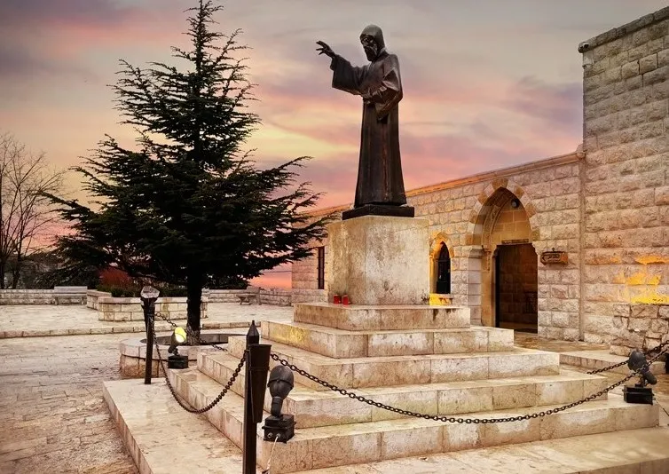

Visiting Annaya
A practical pilgrim's guide to the monastery where Saint Charbel lived, died, and lies entombed: how to get there, what to see and in what order, praying at the tomb, the hermitage, the holy oil, and the days that draw the crowds. Everyone is welcome.
Part of the Saint Charbel Encyclopedia. Read the full story of his life or browse all topics.
Before You Set Out
- Check the monastery's official program for the Mass you want to attend, especially on the 22nd of the month. The monastery's website is the place to look.
- Ask the monastery about visiting hours and about access to the tomb and the hermitage if anyone in your group needs help getting around.
- Agree a time to pray and a place to meet with the people traveling with you, so the logistics do not crowd out the prayer. See also the 22nd of the month if you plan to come that day.
Where Annaya Is
Annaya is a village in the Jbeil (Byblos) district of Mount Lebanon, about 52 kilometers from Beirut. The Monastery of Saint Maron sits above the village at about 1,200 meters, on a forested mountainside of pine and oak with the Mediterranean visible in the distance.
The drive from Beirut is about 52 kilometers, usually around 90 minutes depending on traffic: north along the coastal highway to Jbeil, then inland and uphill on a paved mountain road - about 17 kilometers from Jbeil - all the way to the monastery gates. There is no regular public transport to the monastery; most visitors drive, hire a taxi for the day, or join an organized pilgrimage. Parking is available on the grounds.
What to See, and in What Order
The monastery receives visitors daily; check opening times with the monastery before you travel. You do not need to be Catholic, or Christian, to enter and pray.
- Start at the church that holds the tomb - the reason people come, and quietest early in the day.
- Then the small museum of Saint Charbel's vestments and personal belongings.
- Then walk uphill to the hermitage where he spent his last twenty-three years.
- Finish on the grounds and forest paths - a good place to sit before driving back down.
Allow two to three hours for an unhurried visit. On the 22nd of the month or during the July feast, allow considerably longer - the line to reach the tomb moves slowly.
Saint Charbel's Tomb
The tomb is the heart of the pilgrimage: a marble sepulchre in the monastery's Tomb Church, also called the Church of the Sepulchre. The large Church of Saint Charbel, which the Lebanese Maronite Order built on the western side of the monastery after his beatification in 1965 (it dates from 1974), was raised to hold the numbers coming to pray.
Pilgrims queue to reach it, and the waiting is part of the visit - people pray as they wait, many carrying a written intention, a photograph of someone sick, sometimes a medical report. At the tomb the gestures are simple: kneel, rest a hand flat on the marble, stay in silence. Many touch the stone and then the part of their body where they ask for healing. Written intentions are left at the tomb.
The walls nearby are lined with crutches, braces, photographs, and handwritten letters left by those who believe they were healed through his intercession. Prayers rise in Arabic, French, English, Spanish, and more.
This is a place of prayer before it is a monument: keep phones silent, photography discreet, and conversation low. For a quieter visit, come on an ordinary weekday morning, when you can kneel at the tomb without a queue behind you.
The Hermitage of Saints Peter and Paul
Higher up the hill, a short walk from the main buildings, stands the hermitage where Saint Charbel lived from 1875 until his death on Christmas Eve 1898 - the last twenty-three years of his life. It is small and plain: a chapel, a cell with a wooden bed and a simple table, and a modest garden, kept close to how it was in his lifetime. Many pilgrims call it the most moving part of the visit - the room where he prayed through the long years of his solitude, and where his silence still feels close.
The Holy Oil
After Saint Charbel's death, monks reported an oil-like substance seeping from his body, and the tomb has been linked with an oil pilgrims apply in prayer for healing. At Annaya you will find small bottles of blessed oil near the shrine, often given freely. Pilgrims anoint themselves or those they pray for, and carry it home as a physical link to the saint. It is a devotional aid, not a medicine - the Church presents it as an occasion for faith, not a guaranteed cure.
Mass at Annaya
Mass is celebrated daily at the monastery, usually several times a day, mainly in Arabic in the Maronite rite, and the church stays open through the day for private prayer at the tomb. Times shift with the season and change on feast days and the 22nd of the month; they are posted at the church entrance. If you are traveling for a particular Mass, confirm with the monastery directly before you go rather than relying on a schedule found online.
When to Come
- An ordinary weekday morning is the quietest, most contemplative time.
- The 22nd of every month draws large crowds for Mass and, weather permitting, a Eucharistic procession - a tradition that traces to the healing of Nohad El Shami in January 1993.
- The July feast of Saint Charbel (third Sunday of July in the Maronite calendar, July 24 universally) is the busiest period of the year, with an all-night vigil and the great outdoor Divine Liturgy.
- Christmas Eve, the anniversary of his death, is another major day of pilgrimage.
Spring and autumn are the most pleasant seasons. Summers are warm but cooler than the coast thanks to the altitude; winter can bring snow to the mountain road.
Practical Tips
- Dress modestly - this is an active place of worship. Shoulders and knees covered is a safe rule for everyone.
- Wear comfortable shoes - the ground is uneven and the walk to the hermitage is uphill.
- Carry your intention with you - many pilgrims bring a written prayer or a photograph of the person they are praying for.
- See the bigger map - Annaya is one of three places that tell his whole story: Bekaa Kafra, Mayfouq, and Annaya.
- Walk a section of the Darb Mar Charbel trail - Lebanon's new long-distance pilgrimage route starts at the monastery gates, and the first section to Mayfouq is open.
- Pair the visit with Jbeil (Byblos) - the ancient coastal city below the mountain makes a natural second stop the same day.
- Complete the triangle - nearby Kfifan holds the tomb of St Nimatullah, Charbel's teacher, and Jrabta the shrine of St Rafqa; both belong to the Maronite monastic story.
However you come, and whatever you carry with you, Annaya asks little and offers much. Most pilgrims leave having done something very simple: they knelt at a tomb, in silence, and prayed.